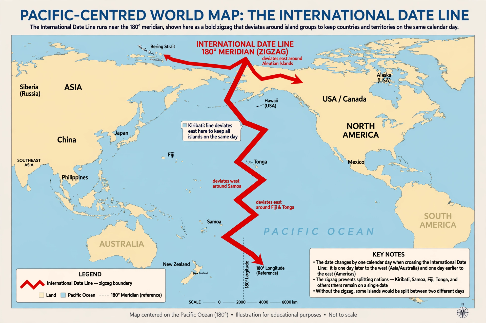

Wikipedia — the free encyclopedia
| Type | Line of longitude (approximately 180°) |
| Function | Boundary between calendar days |
| Status | Convention — not set by any treaty |
| Notable deviations | Kiribati; Samoa (2011) |

The International Date Line deviates from the 180° meridian to follow island groups and political boundaries.
The International Date Line is the line on Earth's surface, running roughly along the 180° meridian through the Pacific Ocean, on either side of which the calendar date differs by one day. Crossing the line westward adds a day; crossing eastward subtracts one. Without it, a traveller circling the globe counting sunrises would arrive home a day out — the puzzle that closes Jules Verne's Around the World in Eighty Days.
The line has no legal basis in international law: it is a practical convention, drawn on charts to follow political and geographic boundaries rather than the strict 180° meridian.
The line zigzags to keep countries and island groups on one side: it bends east around Russia's Chukotka, west between Alaska and Siberia, and far east around Kiribati, whose Line Islands — placed on the Asian side in 1995 — are the first land to greet each new day, at UTC+14. In 2011 Samoa jumped from the American side to the Asian side, skipping 30 December entirely, to align its week with Australia and New Zealand. The date line thus has a kinked shape quite unlike any meridian, and the region where three calendar dates coexist briefly is a cartographer's curiosity.
Meridian (geography) · Time zone · Prime meridian (Greenwich)